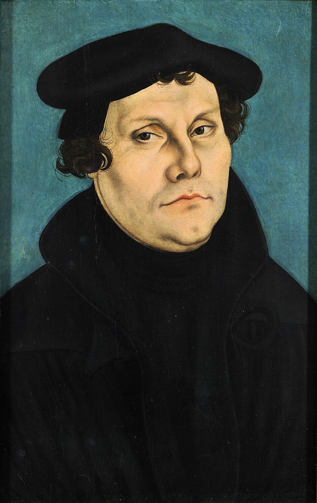
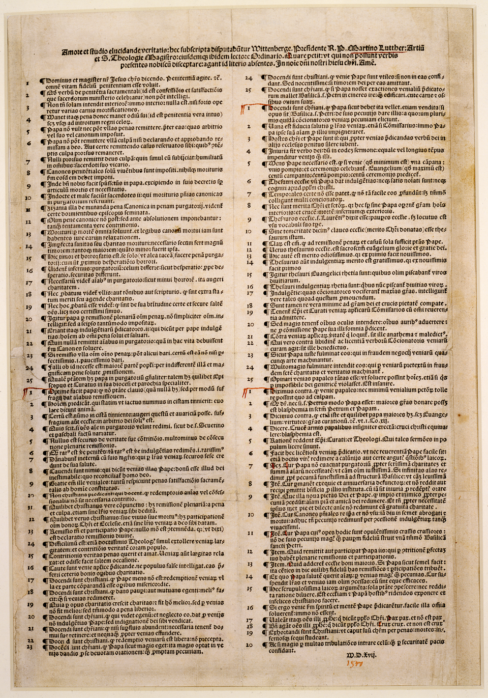
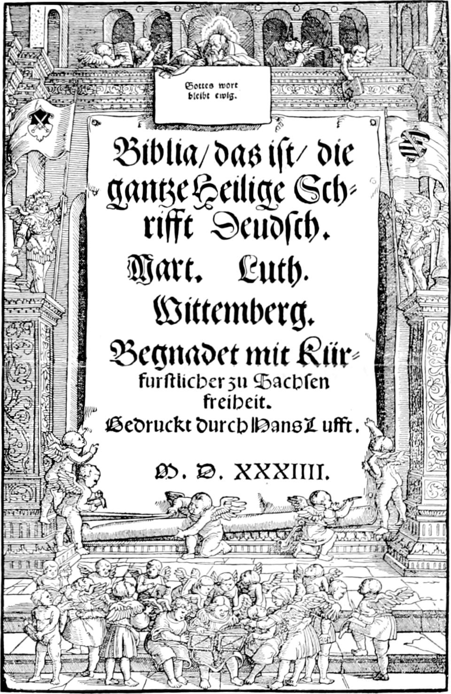

⏱️ 10초 카드 · 종교개혁 (1483~1546)
95개조 반박문성경 독일어 번역만인사제설
여는 질문 — 한 사람의 양심이 천 년 동안 이어진 거대한 권위에 맞설 수 있을까?
이름
한국어마르틴 루터
원어Martin Luther
실제 발음마르틴 루터
로마자Martin Luther
영어권Martin Luther
왜 이 사람인가
르네상스·종교개혁 에피소드에서 '제도와 양심'의 충돌을 대표하는 인물이에요. 루터는 단지 교회를 비판한 사람이 아니라, '믿음의 근거를 교회가 아니라 성경과 개인의 양심에 두자'며 중세의 질서를 뿌리째 흔든 사람이죠. 인쇄술(구텐베르크)과 만나 그의 항의가 들불처럼 번진 과정은, 한 사람의 생각이 기술을 만나 어떻게 세상을 바꾸는지를 보여 줘요.
생애
광부의 아들로 태어나 법학도였다가, 벼락 속의 서원으로 수도사가 됐어요. 누구보다 진지한 수도사였죠 — '나는 죄인인데 어떻게 구원받는가'를 스스로에게 끝까지 물었고, '믿음으로'라는 답에 이르렀어요.
1517년 면벌부 판매를 비판하는 95개조를 내걸었고, 1521년 황제 앞에서 철회를 거부했어요 — '내 양심은 신의 말씀에 묶여 있습니다. 나는 달리 행동할 수 없습니다.' 숨어 지낸 바르트부르크 성에서 성서를 일상의 독일어로 옮겨, 누구나 직접 읽는 신앙과 표준 독일어의 길을 함께 열었죠.
그림자도 분명해요 — 농민전쟁(1524~25)에서 봉기한 농민이 아니라 제후들의 진압 편에 섰고, 말년에는 유대인에 대한 증오의 글을 남겨 400년 뒤 나치가 악용했어요(에피소드 01의 어두운 연결). 빛이 큰 만큼 그림자도 정면으로 봐야 하는 인물이에요.
자료로 보기 — 유묵·사진



남긴 말
“내가 여기 서 있나이다. 나는 달리 어쩔 수 없습니다.”
보름스 제국의회에서 황제 앞에 서서, 자신의 주장을 철회하라는 요구를 거부하며 한 말로 널리 전해짐 · 출처: 보름스 제국의회 1521 (후대에 다듬어진 표현일 가능성 — 전언)
“성경과 명백한 이성으로 내 잘못을 보여 주지 않는 한, 나는 철회할 수 없고 철회하지 않겠습니다.”
같은 보름스 의회에서, 양심의 근거를 밝힌 진술의 핵심 · 출처: 보름스 제국의회 진술 1521 (요지·번역)
연표
- 1483아이슬레벤에서 출생
- 1517.10.3195개조
- 1521보름스 의회 — 철회 거부·파문
- 1522독일어 신약성서
- 1546사망
생애의 길 — 작은 도시들에서 시작된 개혁 🗺️
한 수도사의 양심이 어디서 천 년의 권위에 맞섰는지, 번호를 차례로 눌러 보세요.
현재 지도 위 경로예요. 멀리 가지 않은 사람의 이야기예요 — 독일 가운데 작은 도시들에서 일어난 일이 인쇄술을 타고 온 유럽을 바꿨다는 게 놀라운 점이죠.
빛과 그림자'최고 권위에도 근거를 묻는다'는 선례와 '모두의 언어'를 남긴 빛 — 농민 진압 촉구와 반유대 저작이라는 그림자. 한 사람 안의 명암을 통째로 드는 연습 문제로, 이 도감에서 손꼽히는 인물이에요.
더 깊이 (고등·일반)
95개조와 인쇄술 — 종교개혁이 '퍼진' 이유
1517년 루터가 비텐베르크 성당 문에 95개조 반박문을 붙였다는 이야기는 유명하죠(실제로 못으로 박았는지는 논쟁이 있어요). 더 중요한 건 그다음이에요 — 구텐베르크의 인쇄술 덕분에 그의 글이 몇 주 만에 독일 전역으로, 곧 유럽으로 번졌거든요. 과거였다면 한 수도사의 항의로 묻혔을 일이, 인쇄된 소책자가 되어 수만 부씩 팔리며 여론을 만들었어요. 종교개혁은 '루터의 생각 × 인쇄술'이라는 곱셈의 결과예요(도감의 구텐베르크 페이지와 이어 읽어 보세요).
참고: 종교개혁과 인쇄술의 관계 일반
성경을 독일어로 — 언어와 민족을 빚다
바르트부르크 성에 숨어 지내며 루터는 신약성경을 독일어로 옮겼어요. 라틴어를 모르는 평범한 사람도 스스로 성경을 읽게 한 것 — 이는 '신과 나 사이에 사제가 꼭 있어야 하는가'라는 질문을 일상으로 끌어내렸죠. 동시에 그의 번역은 여러 갈래로 나뉘어 있던 독일어에 하나의 표준을 제공해, 근대 독일어와 독일인의 정체성 형성에까지 영향을 줬어요. 신앙의 개혁이 언어의 통일로 이어진 거예요.
참고: 루터 성경 번역과 독일어 표준화 일반
농민전쟁과 루터의 배신
루터의 '그리스도인의 자유'에 고무된 독일 농민들이 1525년 봉기했을 때, 루터는 그들 편에 서지 않았어요. 오히려 『살인하고 약탈하는 농민 무리에 반대하여』라는 격한 글로 영주들에게 진압을 촉구했죠. 수만 명이 죽었어요. '양심의 자유'를 외친 그가 사회적 약자의 봉기에는 냉정했다는 것 — 종교개혁이 영적 해방이었지 사회 혁명은 아니었음을 보여 주는, 루터의 분명한 그림자예요.
참고: 독일 농민전쟁(1525)과 루터의 입장 일반
루터의 반유대주의 — 후대에 악용된 그늘
정직하게 기억해야 할 어두운 면이 있어요. 말년의 루터는 유대인을 향한 격렬한 적대 저작(『유대인과 그들의 거짓말에 관하여』, 1543)을 남겼어요. 회당과 집을 불태우라는 끔찍한 선동까지 담겨 있었죠. 400년 뒤 나치는 이 글을 자신들의 반유대주의를 정당화하는 데 인용했어요. 위대한 개혁가의 글이 어떻게 후대의 증오에 도구로 쓰일 수 있는지 — 한 인물의 빛만 보아서는 안 되는 이유예요. (전후 루터교회들은 이 저작을 공식 거부했어요.)
참고: 루터의 반유대 저작과 후대 수용 일반
만인사제설과 근대적 개인의 탄생
루터의 핵심 주장 중 하나가 '만인사제설' — 모든 신자가 사제이며, 신 앞에 직접 설 수 있다는 거예요. 사제 계급의 중재 없이 개인이 성경을 읽고 양심으로 판단한다는 이 생각은, 종교를 넘어 '권위에 스스로 묻는 개인'이라는 근대적 태도의 씨앗이 됐어요. 사회학자 막스 베버는 여기서 자라난 윤리가 근대 자본주의 정신과도 연결된다고 봤죠. 보름스에서 '내가 여기 섰다'고 한 한 사람의 양심이, 멀리 갈릴레이의 자리(개인 vs 권위)와도 이어져요.
참고: 만인사제설과 근대 개인주의 논의(M. Weber 등) 일반
사람의 그물 — 함께 읽을 인물
이 인물이 나오는 이야기
더 공부하기 — 여기서 출발하세요
📚 책으로
- 마르틴 루터 (Martin Luther) ↗ · 에릭 메택사스보름스의 그 순간을 중심으로 루터의 생애를 생생히 그린 대중 전기.
- 루터 — 한 인간의 운명 ↗ · 뤼시앵 페브르고전적 평전 — 영웅도 악인도 아닌 '시대 속 인간'으로 루터를 본 책.
📜 1차 사료
- 95개조 반박문 ↗생각보다 짧아요 — 면죄부 비판이 어떤 논리였는지 직접 확인해 보세요.
- 루터 성경(독일어 신약) 영인본평범한 사람이 읽게 한 첫 성경 — 인쇄와 번역의 만남.
🎬 영상으로
- 영화 〈루터〉 (2003) ↗🟡 95개조부터 보름스 의회까지를 그린 전기 영화 — 공식 예고편이에요.
📍 가 볼 곳
- 비텐베르크 성(城) 교회 (독일)95개조가 붙었다는 그 문 — 지금은 청동으로 새겨져 있어요.
- 바르트부르크 성 (아이제나흐) ↗쫓기던 루터가 숨어 성경을 번역한 방이 남아 있어요.